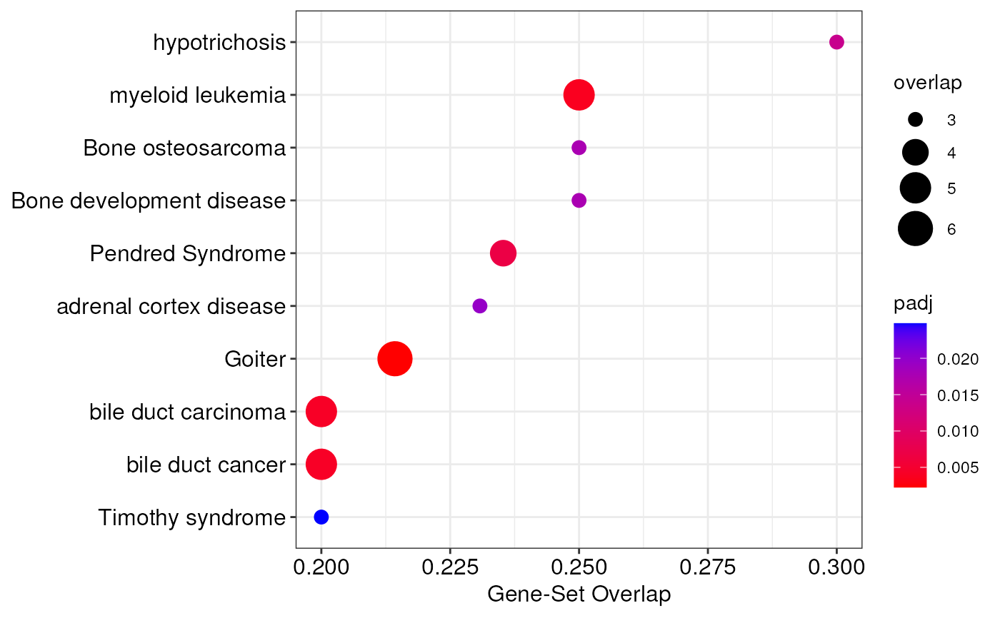

R/enrichment.R
enrichTargets.RdThis function allows to perform an over-representation analysis (ORA) of integrated miRNA targets in order to explore the biological effects of targets that are statistically associated/correlated with DE-miRNAs. The enrichment analysis can be performed using different databases, namely Gene Ontology (GO), Kyoto Encyclopedia of Genes and Genomes (KEGG), MsigDB, WikiPathways, Reactome, Enrichr, Disease Ontology (DO), Network of Cancer Genes (NCG), DisGeNET, and COVID19.
enrichTargets(
mirnaObj,
database = "GO",
category = NULL,
organism = "Homo sapiens",
pCutoff = 0.05,
pAdjustment = "fdr",
minSize = 10L,
maxSize = 500L
)A MirnaExperiment object
containing miRNA and gene data
The name of the database used for the enrichment analysis.
It must be one of: GO, KEGG, MsigDB, WikiPathways, Reactome,
Enrichr, DO, NCG, DisGeNET, COVID19. Default is GO
The desired subcategory of gene sets present in database.
Please, see the details section to check the available categories for
each database. Default is NULL to use default categories
The name of the organism under consideration. The different
databases have different supported organisms. To see the list of supported
organisms for a given database, use the supportedOrganisms() function.
Default is Homo sapiens
The adjusted p-value cutoff to use for statistical
significance. The default value is 0.05
The p-value correction method for multiple testing. It
must be one of: fdr (default), BH, none, holm, hochberg, hommel,
bonferroni, BY
The minimum size for a gene set. All gene sets containing less than this number of genes will not be considered. Default is 10
The maximum size for a gene set. All gene sets containing more than this number of genes will not be considered. Default is 500
This function produces a list object with two elements, namely
'upregulated' and 'downregulated', each containing a
FunctionalEnrichment
object storing enrichment results of upregulated and downregulated target genes, respectively.
To access results of FunctionalEnrichment
objects, the user can use the enrichmentResults() function. Additionally,
MIRit provides several functions to graphically represent enrichment
analyses, including enrichmentBarplot(), and enrichmentDotplot().
For each database, different organisms are supported. To check the supported
organisms for a given database, MIRit provides the supportedOrganisms()
function.
Moreover, since different database support multiple subcategories, the
category parameter can be set to specify the desired resource. For
specific information regarding the available categories for the different
databases, check the details section of the enrichGenes() documentation.
To download gene sets from the above mentioned databases, MIRit uses the
geneset R package. Moreover, to perform ORA, MIRit implements the
fgsea package in Bioconductor.
Liu, Y., Li, G. Empowering biologists to decode omics data: the Genekitr R package and web server. BMC Bioinformatics 24, 214 (2023). https://doi.org/10.1186/s12859-023-05342-9.
Korotkevich G, Sukhov V, Sergushichev A (2019). “Fast gene set enrichment analysis.” bioRxiv. doi:10.1101/060012, http://biorxiv.org/content/early/2016/06/20/060012.
# load example MirnaExperiment object
obj <- loadExamples()
# perform enrichment analysis of integrated targets with DO
targets_enrichment <- enrichTargets(obj, database = "DO")
#> Preparing the appropriate gene set...
#> Some ID occurs one-to-many match, like "26476, 127068, 101060321"...
#> 99.06% genes are mapped to symbol
#> Performing the enrichment of upregulated genes...
#> Performing the enrichment of downregulated genes...
#> The enrichment of genes reported 113 significantly enriched terms for downregulated genes and 0 for upregulated genes.
# extract enrichment results of downregulated targets
enr_down <- targets_enrichment[["downregulated"]]
# extract enrichment results as a data.frame
enr_df <- enrichmentResults(enr_down)
# create a dotplot of enriched terms
enrichmentDotplot(enr_down)
